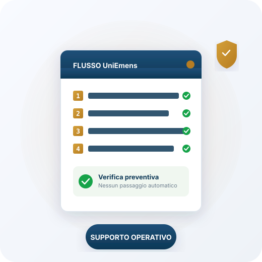

01
Selezioni un primo gruppo di aziende
Non parti da tutto il portafoglio. Individui poche aziende potenzialmente adatte.
Aiuta le aziende che segui ad attivare, in modo graduale e verificato, strumenti come fondo interprofessionale, fondo sanitario, bilateralità e assistenza contrattuale, con supporto documentale e operativo anche sui passaggi UniEmens.

Molte aziende potrebbero accedere a servizi, vantaggi e strumenti già disponibili, ma spesso non li attivano davvero.
Non per mancanza di possibilità, ma per mancanza di tempo, metodo e supporto nei passaggi più delicati.
Fondi interprofessionali, sanità integrativa, bilateralità e assistenza contrattuale possono generare valore concreto, ma solo se vengono letti correttamente rispetto alla posizione dell'azienda, al CCNL applicato, agli strumenti già attivi e agli obiettivi reali dell'impresa.
Il risultato è semplice: opportunità utili restano ferme, poco comprese o gestite in modo passivo.


Con UNILAVORO PMI puoi trasformare strumenti e servizi spesso poco valorizzati in un percorso più stabile e continuativo, con effetti concreti anche sul piano economico — valorizzando attività che restano fuori dal perimetro ordinario della consulenza paghe.
Per il tuo studio significa:
UNILAVORO PMI è una confederazione datoriale che dichiara di rappresentare e assistere le piccole e medie imprese italiane e, sul sito ufficiale, indica una base di 130.000 imprese associate. Tra i servizi pubblicati rientrano assistenza sindacale, assistenza contrattuale, welfare, accesso al credito, servizi allo sportello e bilateralità.
Per il consulente questo significa una cosa semplice: non stai valutando un'idea astratta, ma un sistema già strutturato, con servizi, sedi e strumenti già presenti.

Il percorso non nasce per proporre tutto a tutti. Nasce per aiutare il consulente a valutare, azienda per azienda, dove esiste una reale opportunità utile, corretta e sostenibile.
Non parti da tutto il portafoglio. Individui poche aziende potenzialmente adatte.
Si analizzano CCNL, strumenti già attivi, esigenze dell'azienda, documentazione e opportunità concrete.
Nessuna attivazione automatica. Nessun passaggio senza consenso. Nessuna forzatura.
Quattro strumenti complementari, ognuno con un suo riferimento normativo. Si valutano azienda per azienda, partendo dalla posizione reale e dai fabbisogni concreti.
Puoi valutare l'attivazione o l'eventuale cambio di fondo con un percorso controllato, partendo dalla posizione reale dell'azienda e dai fabbisogni formativi. L'azienda accede a corsi online gratuiti e scontistiche dedicate.
Il fondo sanitario del sistema UNILAVORO PMI: assistenza sanitaria integrativa per i dipendenti, portale semplice per i lavoratori e minori oneri di gestione per i consulenti del lavoro.
L'Ente Bilaterale del sistema UNILAVORO PMI: puoi verificare se la posizione aziendale è coerente, quali strumenti sono già attivi e quali prestazioni risultano effettivamente collegate al percorso scelto.
Assistenza sulla corretta applicazione dei contratti collettivi e degli accordi di secondo livello, gestita direttamente da UNILAVORO PMI.
Nel primo confronto capisci, senza impegno, se il modello è utile per il tuo studio e da quali aziende potresti partire.

Si parte da poche imprese, non da tutto il portafoglio.
Può trattarsi di aziende che:
Raccogli le informazioni utili:
È la base per ogni decisione successiva. Questa fase serve a evitare valutazioni generiche o attivazioni non coerenti.
UNILAVORO PMI supporta lo studio nell'analisi del caso concreto. Si verifica la coerenza tra posizione aziendale, strumenti attivi, documentazione, opportunità e scelta dell'impresa.
Il consulente mantiene il rapporto diretto con l'azienda e la conoscenza del contesto.
Nessun passaggio operativo viene effettuato senza adesione documentata.
La scelta dell'impresa resta sempre centrale.
Quando il percorso è definito, lo studio riceve supporto anche sui passaggi amministrativi e UniEmens, dove necessari.
Quando la posizione aziendale è stata verificata e l'azienda ha aderito formalmente, il consulente può ricevere supporto anche nella corretta gestione dei passaggi operativi collegati ai flussi UniEmens.
Il principio resta sempre lo stesso:

Nota. Esempio a solo scopo illustrativo. I risultati effettivi dipendono dal numero di aziende coinvolte, dai dipendenti interessati, dagli strumenti attivabili, dagli accordi applicabili e dalle condizioni definite nel percorso.
Uno studio di consulenza del lavoro segue 45 aziende, per un totale di circa 260 cedolini mensili.
Il consulente decide di non partire da tutto il portafoglio, ma da un primo gruppo selezionato di 6 aziende, con circa 48 dipendenti complessivi.
Durante la verifica emerge che alcune di queste aziende:
Con il supporto di UNILAVORO PMI, lo studio verifica la documentazione delle aziende come CCNL applicati; strumenti già attivi; fabbisogni formativi; coerenza delle eventuali attivazioni; passaggi operativi e UniEmens, dove necessari.
Dopo la verifica, alcune aziende vengono accompagnate nell'attivazione di strumenti coerenti con la loro posizione.
Il percorso UNILAVORO PMI è costruito per evitare che aumenti il carico di lavoro per il consulente.
Si parte da poche aziende, si procede per fasi e si valutano solo gli strumenti realmente coerenti con la posizione del cliente.
L'obiettivo è creare valore senza caricare lo studio di attività non gestibili.
Per questo il modello prevede:
Nel confronto riservato puoi chiarire:
Nessun impegno. Il primo obiettivo è capire se il percorso è adatto al tuo studio.
Ti aiutiamo a capire se il modello è adatto al tuo studio, da quali aziende partire e come impostare il percorso in modo corretto e progressivo.
Molte aziende hanno già fondi, strumenti, adesioni o procedure attive.
Per questo il percorso non parte mai dall'idea di sostituire automaticamente ciò che esiste.
Se l'azienda ha già strumenti attivi, si verifica prima la situazione esistente. Solo dopo si valuta se ci sono alternative coerenti, utili e documentabili.
Questo consente di evitare forzature e di proporre all'impresa solo valutazioni motivate.
L'obiettivo non è cambiare per cambiare. L'obiettivo è capire se la situazione attuale è coerente, se può essere migliorata e se esistono strumenti più adatti agli obiettivi dell'azienda.
È adatto se:
Non è adatto se: